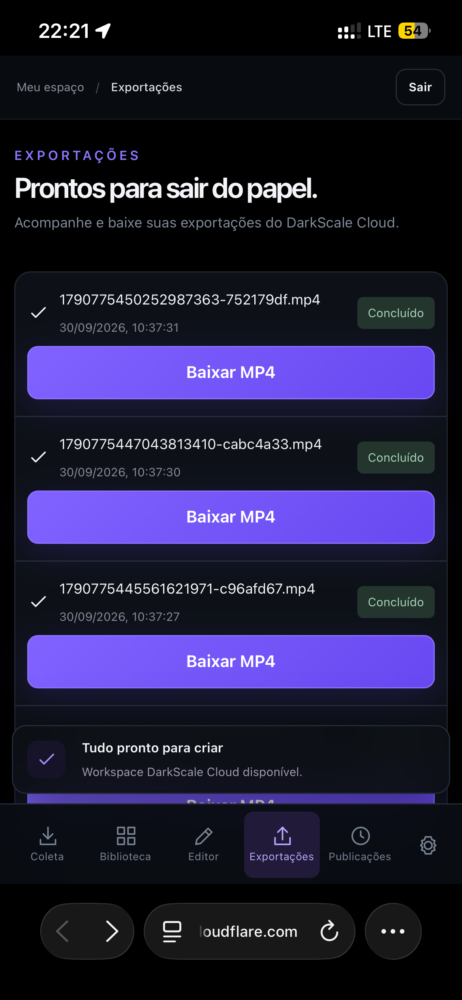

Escolha a referência
Informe um perfil público que você quer acompanhar como fonte de referência para sua operação de conteúdo.
O DarkScale é um sistema completo para quem quer construir e operar páginas de conteúdo com muito mais eficiência. Você escolhe um perfil público de referência, reúne os vídeos da operação, identifica conteúdos de alto desempenho, prepara e edita vários vídeos em lote e organiza a programação de postagem no Instagram.
QUERO ENTRAR NO GRUPO →


TELAS REAIS DO DARKSCALE CLOUD • MOBILE
Em vez de abrir várias ferramentas e repetir o mesmo trabalho vídeo por vídeo, o DarkScale conecta as etapas em um único processo.
Informe um perfil público que você quer acompanhar como fonte de referência para sua operação de conteúdo.
Reúna os vídeos disponíveis e organize sinais de desempenho para facilitar a seleção dos conteúdos mais interessantes.
Prepare vários vídeos no mesmo fluxo, incluindo elementos da sua operação como formato, capa e legenda.
Monte sua fila, defina a sequência de publicação e centralize a preparação das postagens para Instagram.
Reduza tarefas manuais repetidas e concentre sua energia em escolher melhor os conteúdos e desenvolver a página.
Estruture uma rotina capaz de lidar com muito mais vídeos sem transformar cada postagem em um processo separado.
Observe conteúdos que já tiveram bom desempenho em perfis escolhidos para orientar sua seleção e seus testes.
Organize uma fila antecipadamente e mantenha uma cadência de conteúdo sem depender de preparar tudo na hora.
Vídeos, preparação, capas, legendas, status e fila deixam de ficar espalhados em várias etapas desconectadas.
Uma operação mais organizada permite testar mais conteúdos e desenvolver páginas com potencial para alcançar audiências maiores.
Procurar vídeo → baixar → organizar → editar → criar capa → escrever legenda → abrir Instagram → postar → repetir.
Descoberta → seleção → produção em massa → fila → programação. Um fluxo pensado para manter páginas abastecidas com conteúdo.
O DarkScale ajuda na operação e na consistência. Crescimento de seguidores, alcance e viralização dependem também da qualidade do conteúdo, público, conta e distribuição do Instagram; não são resultados garantidos.
Estas são telas reais do DarkScale Cloud. Da entrada dos perfis até a fila de publicação, cada etapa foi pensada para reduzir trabalho repetitivo e aumentar sua capacidade de operação.
Adicione perfis públicos do Instagram ou TikTok e reúna os conteúdos na sua biblioteca para análise e produção.
Centenas de vídeos ficam organizados em um workspace único, prontos para receber ajustes e seguir para produção.
Navegue pela fila, enquadre para 9:16 e prepare os vídeos sem reconstruir o processo do zero a cada conteúdo.

Acompanhe as exportações concluídas e mantenha os arquivos processados prontos para a próxima etapa.

Visualize horários, conta e status das publicações para administrar uma sequência de conteúdo com muito mais clareza.
Filmes, anime, futebol, curiosidades, entretenimento e outras operações de conteúdo.
Quem administra uma ou mais páginas e precisa organizar volume e consistência.
Quem quer sair do processo artesanal e construir um fluxo repetível de produção e publicação.
O DarkScale já está operacional. O grupo oficial reúne quem quer ver demonstrações reais, acompanhar novas funções e receber primeiro as informações sobre a abertura comercial.
Veja os fluxos do sistema em funcionamento.
Acompanhe recursos e novas funções e melhorias.
Receba no grupo as informações quando o acesso inicial estiver disponível.
No grupo você acompanha demonstrações, novidades, resultados compartilhados e recebe as informações da abertura comercial.
Douglas entrou no grupo
Maycon entrou no grupo
Gabriel entrou no grupo
Demonstração visual da experiência da página. Não representa entradas verificadas em tempo real.
Entre gratuitamente no grupo oficial do DarkScale.
ENTRAR NO GRUPO DO WHATSAPP → Entrar no grupo não gera cobrança nem obrigação de compra.O objetivo é facilitar a coleta de conteúdos públicos compatíveis com o fluxo da ferramenta. Disponibilidade e funcionamento podem variar conforme a fonte e as regras da plataforma.
O sistema pode organizar indicadores disponíveis de desempenho para ajudar você a encontrar conteúdos que se destacaram. Isso serve como referência; desempenho passado não garante que outro conteúdo terá o mesmo resultado.
Sim. A edição e preparação em lote são partes centrais da proposta do DarkScale.
A proposta inclui organizar e programar a operação de publicação por integrações suportadas, respeitando os recursos e limitações disponibilizados pelo Instagram/Meta.
O DarkScale não promete seguidores ou viralização. Ele busca aumentar sua capacidade operacional e consistência, permitindo testar e publicar conteúdo de forma mais organizada.
O DarkScale reúne as etapas que normalmente ficam espalhadas entre várias ferramentas. Você pode estruturar páginas de memes, filmes, anime, futebol, curiosidades, entretenimento e outros nichos, usando referências de conteúdo para alimentar uma rotina organizada de produção e publicação.
Monte operações de conteúdo sem depender de aparecer em frente à câmera, escolhendo um nicho e construindo uma identidade própria para a página.
Use perfis públicos como referência para identificar conteúdos e formatos que estão conseguindo atenção no nicho e orientar seus próprios testes.
Trabalhe com dezenas de conteúdos dentro do mesmo fluxo em vez de baixar, organizar e preparar cada vídeo isoladamente.
Deixe uma fila preparada para manter frequência de publicação, mesmo quando você não estiver produzindo conteúdo naquele momento.
Mais testes e consistência aumentam suas oportunidades de encontrar formatos que conectem com o público e desenvolver páginas com milhares de seguidores.
Reduza tarefas repetitivas para concentrar tempo em seleção, estratégia, identidade da página e análise do que está funcionando.
Centralize biblioteca, edição, exportação e status de publicação em uma operação visual e fácil de acompanhar.
Em vez de depender de improviso todos os dias, construa um processo repetível para alimentar e desenvolver suas páginas.
O DarkScale é uma ferramenta operacional e não garante quantidade de seguidores, visualizações, renda ou viralização. Os resultados variam conforme nicho, conteúdo, estratégia, frequência, audiência e distribuição das plataformas.
Exemplos compartilhados pela operação mostram páginas novas alcançando milhares de seguidores enquanto o DarkScale ajuda a estruturar coleta, produção em lote e consistência de publicação.

Os números acima correspondem aos exemplos exibidos na imagem fornecida. São resultados específicos dessas páginas e não representam promessa ou garantia de desempenho. Crescimento depende de conteúdo, nicho, frequência, audiência e distribuição da plataforma.